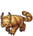
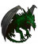
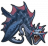

Паддок - здание, предназначенное для прокачки навыков у спутников, требующих
Паддок - здание, предназначенное для прокачки навыков у спутников, требующих  Дрессировку, с помощью
Дрессировку, с помощью  кормов.
кормов.
Принцип прокачки спутников такой же, как и в  Школе, за исключение того, что
Школе, за исключение того, что  корма повышают сразу несколько параметров.
корма повышают сразу несколько параметров.
Постройка
| Здание | Размер | Материалы | Чертеж |
|---|---|---|---|
| |
1200 | 5 × 5 × 10 × 10 × |
Конюшня Сокольничих, Общественный паддок, Ральф Кайдор 3 |
Для раскачки всех статов  Гаспара до максимума и более простых Спутников животных хватит паддока на 42 обучения.
Для  Лесной виверны и  Чудовищного голема нужен  Бестиарий на 60 обучения.
Бестиарий на 60 обучения.